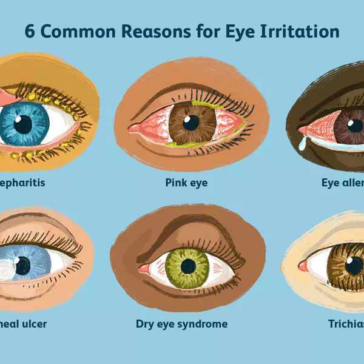

Have you ever wondered if you are tired of working long hours in
front of the computer, or are you simply tired of looking at an
electronic screen for too long?
That is because the light of the LED-screens and the refresh rate of
the screens silently harm you every time you look at them.
Digital device usage has increased substantially in recent years
across all age groups, so that extensive daily use for both social
and professional purposes is now normal.
Digital eye strain (DES)
, also known as computer vision syndrome, encompasses a range of
ocular and visual symptoms, and estimates suggest its prevalence may
be 50% or more among computer users. Symptoms fall into two main
categories: those linked to accommodative or binocular vision
stress, and external symptoms linked to dry eye.
Although symptoms are typically transient, they may be frequent and
persistent, and have an economic impact when vocational computer
users are affected. DES may be identified and measured using one of
several available questionnaires, or objective evaluations of
parameters such as critical flicker–fusion frequency, blink rate and
completeness, accommodative function and pupil characteristics may
be used to provide indices of visual fatigue.
​

A variety of temporary coping methods for DES include refractive
error correction and/or presbyopia, as well as management of dry eye
But those are not enough to deal with DES. You REALLY NEED to take
breaks from looking at the screen. That is the wisest way because
looking at the computers/smartphones/tablets screen is the cause of
DES
Do you know what causes your eyes to feel tired when looking at the
LED-screens?
When you focus on the screen, the frequency with which you blink is
greatly reduced. Moreover, that frequency will decrease in
proportion to how close you sit to the screen. Blinking aids
maintenance of a normal ocular surface, with most blinks instigating
a cycle of secretion, dispersal, evaporation and drainage of tears.
So the more you focus on the LED-screens, the more tired your eyes
get.
So, if you're still glued to your TV or phone screens all day,
stop and get some more outdoor activity. And if you have to work a
lot on the computer, take short breaks continuously to protect your
eyes. You only have 2 eyes, moreover they are extremely sensitive
organs in the body, so treat them well.
Dear children, dear students. I advise you all to be outdoors more,
play games on phones and computers or tablets less.